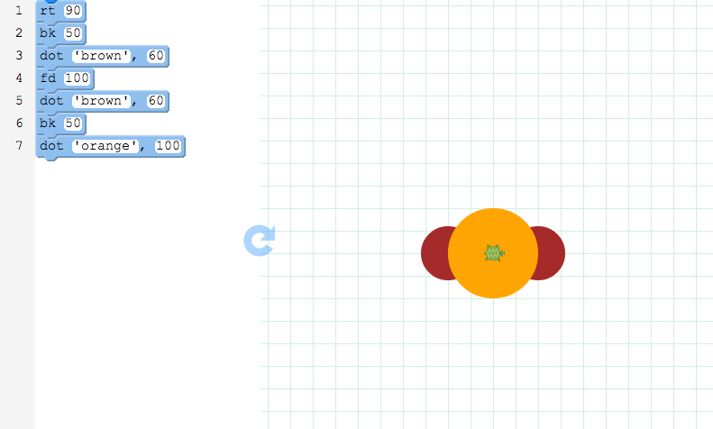
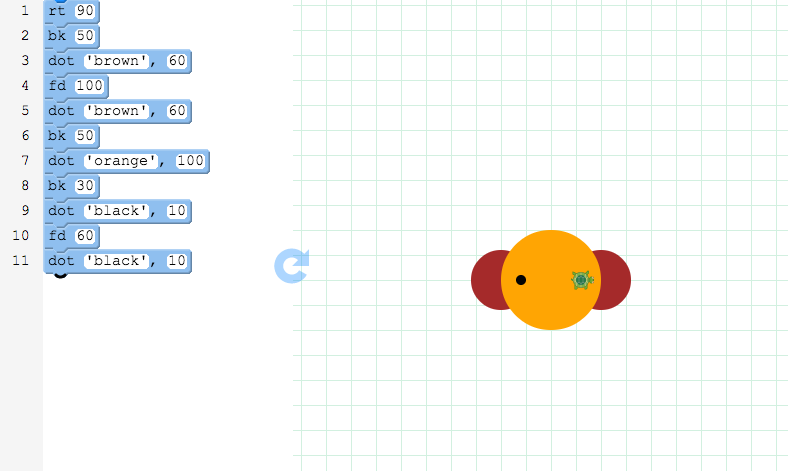
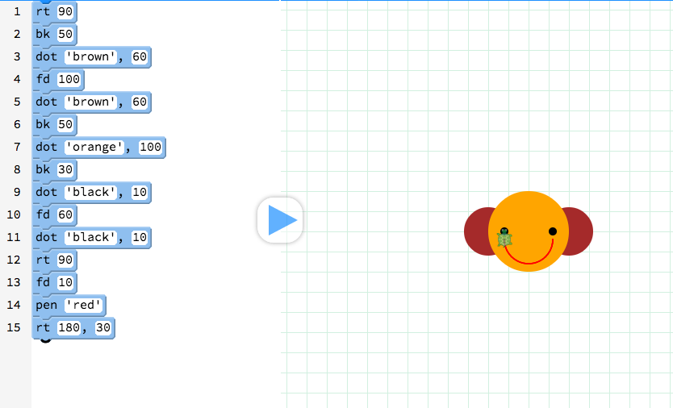

Challenge: Monkey See, Monkey Do
Step 1 Step 2 Step 3
Step 1 Draw the monkey's face
- Before we draw the face, we need to draw the ears. Drag the rt block onto your canvas and make it 90.
- Next make the cursor move to the left by using a bk block. Make it move bk 100.
- Then, drag the dot block onto your canvas and make it brown or another color.
- Great! You've made the first ear. Let's make the next ear. Use fd 100 and dot 'brown'.
- Two ears down, one face to go! Move your cursor back to the middle with bk 50.
- Drag one more dot block and choose another color like orange. Let's make that dot bigger so type in 100.
- Press the
 button to see the monkey's face!
button to see the monkey's face!

Step 2 Draw the monkey's eyes
- Now you can draw the eyes with little circles.
- First, drag a bk block onto your canvas and move the cursor back 30.
- Now, drag a dot block onto your canvas to draw an eye. Try black with size 10.
- Drag a fd block next to move the cursor to the right. Type in 60.
- Then drag another dot block to draw his eye.

Step 3 Make it smile!
- To draw a smile, we have to draw an arc, or a curved line.
- To draw a curved line, drag a rt block and type in 90.
- Then, drag fd block and type in 10.
- Next, add pen and choose a color, like red.
- And finally, use a special rt block to draw the smile. This rt block has two spaces where you can type in two values. Try rt 180, 30.
- Here's your monkey!
